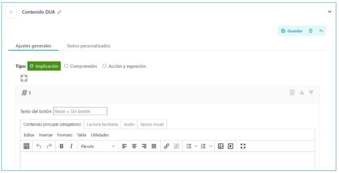
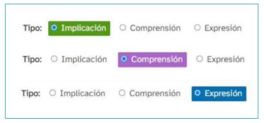
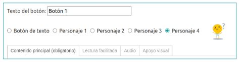

What is it?
The "DUA Content" iDevice allows us to introduce content following the principles of Universal Design for Learning (UDL). It works in all styles, although the most appropriate is the DUA style, as it includes icons and colors to make the most of this iDevice.
Usage examples
Support for main content
7 Reasons to use Free Software in educational centers (based on a text by Richard Stallman)
- Promotes cooperation. Freedom to share tools and developments among centers and teachers.
- Fosters autonomy. Freedom to manage computer equipment of centers, teachers, and students.
- Saves costs. Freedom to copy and distribute the software.
- Encourages learning. Freedom to read and understand the source code of programs.
- Boosts creativity and imagination. Freedom to continuously create and distribute programs and developments.
- Prepares for the digital society. Freedom to choose and design tools, software, and equipment.
- Educates independent and supportive citizens. Freedom to share technological knowledge.
Audio
Visual support

Various blocks and buttons
We tell you what the steps are to create a didactic sequence with eXeLearning:
1. Install eXeLearning
It is a free, open-source tool, available for https://exelearning.net operating systems.
2. Create the structure
eXe allows you to create a navigable menu to organize content into pages. This menu has a hierarchical structure that we can organize according to our needs, with the nodes and subnodes we require. The menu will be available when exporting as a website or when publishing your content in an LMS like Moodle.
3. Add content
We can insert all types of materials, using content blocks or "iDevices". From the text editor we can include and format texts, add images, upload videos or audios, and embed content created with other tools. Finally, we can choose the style from those available, or create a custom one. Regarding the organization of content, we advocate for:
- Start with a motivation, reflection, or prior knowledge mobilization activity, as preparation for subsequent task completion.
- Present the tasks to be carried out with the corresponding explanation, providing, if applicable, links to documents or websites for information search or consultation, ICT tools necessary for task completion (with a link to a manual or tutorial) and, fundamentally, the assessment instrument for that task, which will also serve as a guide for students.
- Add reflection activities throughout the learning process, to work on metacognition, better assimilate learnings, and enhance the competence of learning to learn.
4. Add interactivity
We can enrich our sequence with interactive activities that serve as self-assessment for students. Some of these activities leave a trace in Moodle, so they can be used for grading. Other iDevices such as the Rubric one can also be incorporated.
5. Save and publish
Once the sequence is finished, we can save it in different formats, depending on what we want to do with that material:
- Save the resource locally, on a USB drive or external storage, and send it to students for their consultation.
- Publish it on Commons and offer students the direct link.
- Upload it to an LMS platform like Moodle.
- Publish on other web spaces offered by educational or other types of institutions
Do you have questions?
For any questions or suggestions regarding the tool, we can consult the eXe manual or the Telegram group.
How is it done?
When selecting the "DUA Content" iDevice from the iDevice list, the following will be displayed in our eXeLearning:
{kind=link}

As in the Text iDevice, optionally we can add:
- A title, after saving the IDevice
- An icon to choose from among those available for the selected style (we recall that the UDL style offers the most icons for this context, and has specific icons with colors associated with the type of UDL content we want to introduce)
- A feedback section that will expand when clicking the button (the button text is also editable)
To include content in this iDevice, moreover, we have many more possibilities:
- First, we will choose the type of content we are going to insert according to the classification made by UDL: Engagement, Representation, or Action & Expression. In some styles (like UDL) the contents will be differentiated from each other by the associated color.

- When incorporating the content, we can add as many blocks as we wish. By default only one appears, but we can add more by clicking on the icon .
- In each content block we are offered different possibilities:
- We must decide whether we want the content we introduce to appear directly (in which case we will leave the "Button text" field empty) or if, on the contrary, we want the content to appear when clicking a button. In this case, we will have to indicate the button text and, if we want, associate the button with one of the available characters.

. Button (CC BY-SA) - In the content box we are presented with 4 tabs where we can add the same content in different formats to facilitate its comprehension by all users:
- Main content, where we will include our content (mandatory).
- Facilitated Reading
- Audio
- Visual support
- We must decide whether we want the content we introduce to appear directly (in which case we will leave the "Button text" field empty) or if, on the contrary, we want the content to appear when clicking a button. In this case, we will have to indicate the button text and, if we want, associate the button with one of the available characters.